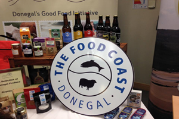

Hooked! Killybegs 2016 is a family friendly event which invites you to experience the many sides of the fishing industry in Ireland's premier fishing port. Discover the fascinating history of the boats, factories and people of the town or meet the sea-life face to face with interactive displays!
Watch and marvel at the speed and skill of expert net menders and fish filleters and hear some tall tales from sea going storytellers. It's not all fishy - local entrepreneurs, craftspeople and community groups will be showing off their wares.
Hooked! Killybegs 2016 is a free event run by volunteers and made possible with funding from 'Fisheries Local Action Groups'. With fish, fun and food, there is something for everyone at Hooked! Killybegs 2016.
Date: 24 September 2016 Location: LYIT Killybegs
